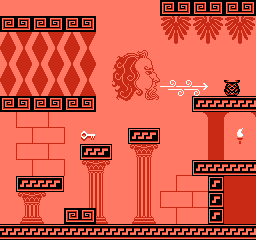

A physics-based platformer about rolling a ball to the top of a mountain, on the NES! You're going to fall, and fall, and fall some more, but it will all be worth it at the top. Just don't forget to collect 80 souls on the way up!
I made Little Sisyphus in one month for the 2023 NESDev Compo, using using NESFab for the programming, MTPaint+Gimp for the graphics, and FamiTracker for the audio.
Years ago I made a game called starevil, which is a bizarre adventure with lots of twists and turns. Despite the game appearing to be a random mess, the development was fully planned out. I knew every scene I wanted to include in advance, having conjured those ideas in a fever-dream apotheosis event that only occurs to sleep-deprived programmers.
I managed to implement all my ideas into starevil, except one: Stairville, which was a corrupted spelling of the game's title. The idea behind Stairville was that your character would fall down a flight of stairs, and you'd have to climb back up, but the controls would be very awkward and there'd be awful ice physics that kept slipping you. It was a funny idea, but was code-intensive, so I shelved the idea until Little Sisyphus came around. Finally I had my chance for a falling-down-stairs game!
Trivia: starevil still retains a reference to Stairville in one of its buildings.A game from the past
Another thing that accelerated development was having worked on platformer ages ago. It was an old assembly project of mine, and one I could never finish, but I had all the pieces there: physics, slopes, breakable blocks, and so on. Much of Little Sisyphus is a reimplementation of that game, going so far as to base the character sprite on a design from that unfinished game.
Even the plot is somewhat similar. My idea for the old game was you'd play as a thief going around stealing things, and each level would have a different gimmick for the item you steal. In the same vein, Little Sisyphus is a heist too, except the plot of Little Sisyphus is very compressed. Originally I was going to have cutscenes explaining the game, but I ran out of space, so all you get is a few sentences.
In the weeks preceding Little Sisyphus development, I spent my time creating demos for the NESFab programming language. These demos were small, self-contained things, like showing how to do scrolling or play sounds, but towards the end I made a few flashy physics examples involving bouncing balls and ropes. Would you believe it, but when you already have code for physics, scolling, and so on, it's really easy to duct-tape them together into a prototype.
The first week of Little Sisyphus was merely these demos with a few features tacked on. I took the ball physics example and added a floor at Y=200 to bounce off of, then added another floor at Y=X to form a diagonal slope. Once I had the ball rolling around correctly, I rewrote the code to use tiles for collision rather than slope equations.
For the ball, I used impulse-based physics, which means everything is done using forces and velocities. For example, when the ball hits the ground, its vertical speed is multiplied by -0.5, which causes the ball to bounce. However, for the rope, I used a different technique called position-based dynamics. This style of physics simulation involves updating the positions first, moving the positions using constraints, then deriving the velocities based on the distance traveled. Sounds complicated, but it's not, so look it up!
The water effect in Little Sisyphus is similar to the one found in Noah's Ark. It uses a the color emphasis feature of the NES's graphics chip to tint underwater scanlines blue. The only difficulty is knowing when to turn the color emphasis on. For Noah's Ark, scanline counting hardware exists on the cartridge which fires an interrupt whenever it's time to tint the screen. Since Little Sisyphus was made for a simpler cartridge type, I didn't have this feature available, so I had to use audio interrupts and sprite-0 hits instead. Each frame, multiple silent sound effects are played, which fire interrupts when they complete. By counting these interrupts, an inaccurate timer can be created which is accurate to about 4 scanlines. To get full precision, the game polls sprite-0, which is similar to how other games — like Super Mario Bros — use sprite-0 to split the status bar screen.
Being the creator of NESFab, you'd think I would have lots of experience using it. The truth is, Little Sisyphus was my first real project in the language, ignoring all the demos I made, and it was a true case of eating one's own dogfood.
The best experience I had with NESFab was its multiplication operator. Having written many NES games in assembly, coding complex physics in assembly is a total nightmare, and almost requires writing a prototype in another language before starting. By contrast, NESFab is good at multiplication, and that alone saved a ton of time (and happiness).
The worst experience I had with NESFab regarded size constraints. When I created NESFab, my prime target was big fat modern ROM chips with megabytes of storage, not 32-64KiB chips like they had in the 1980s. Originally, Little Sisyphus was going to be a larger game, but I soon ran out of space and had to fiddle with compiler options to keep everything compiling. It's not a huge deal, but if I used assembly I could fit a little more content in.
One concern I had during development was hitting bugs in NESFab. Although NESFab works 99% of the time, that buggy 1% can really hurt and waste a lot of time. Thankfully, I didn't hit any serious bugs. In fact, the only bad one I can recall was string literals not working correctly. Understandable, as Little Sisyphus was one of the first to use them.
NESfab's level editor, MapFab, worked OK too, but by far it was better at handling tiles than objects. I'm going to be improving the object system after releasing Little Sisyphus, as I really want it to be a joy to use.
During the brainstorming phase, I had the idea to base the artstyle off of ancient Greek pottery. Seemed original, though I soon discovered another game already did that and looked awesome, Apotheon. No worries; I could use that game for inspiration too!
Due to color limitations on the NES, I decided to experiment with a monochrome palette, using black, white, and shades of orange. This would be boring for a long game, but works for Little Sisyphus and its single level. I did consider changing the palette upon reaching each checkpoint, but there weren't enough palettes I liked. So in the end, it's just black, white, and orange.
I mentioned earlier, but originally the game was going to have cutscenes, and my plan was to use Stable Diffusion AI to help create them. I generated a bunch of images during development, but when the cutscenes got cut, I decided to use the assets for the title screen instead. AI-generated art isn't NES ready of course, so I reduced the colors, then spent a few hours redoing the pixel art to match my style.
Music is definitely my weakness. I mean, I can compose, but it is a very slow and painful process for me and I'm never happy with the result. To mitigate this, I started on the music early, and tried to muck around with composing for at least 15 minutes a day. The end result doesn't sound great to me, but at least it's something I'm not too embarassed about.
Originally there was going to be two songs that played during gameplay, but I scrapped the second due to time. I had a good amount of composition written for the second song though, so I may reuse it for a later game.
Because the water effect uses the DPCM channel, and because my sound effects use the noise channel, I sadly couldn't have drums. Not a big loss, but definitely a loss.
I had a lot of fun making Little Sisyphus, and I'm ecstatic glad I got to use my tools as they were badly in need of testing! The game's been warmly welcomed, so fingers cross it does well in the NESDev compo!